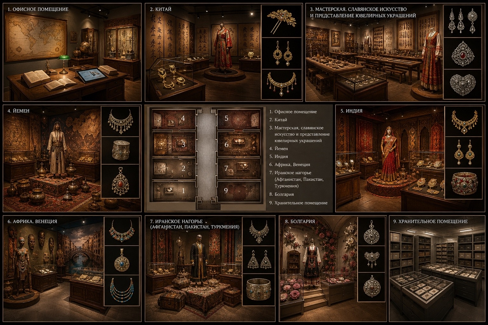

Аннотация проекта
Музей украшений в Нижнем Новгороде – это уникальное пространство, где пересекаются традиции ювелирного искусства разных народов. Проект создаётся в историческом здании на улице Рождественской, 40 (объект культурного наследия).
Концепция – «Кабинет исследователя-путешественника»: интерьеры оформлены как старинный дом коллекционера, где каждый зал посвящён отдельной стране или региону: Китай, Индия, Йемен, Иранское нагорье, Африка и Венеция, Болгария, а также мастерская славянского искусства. Экспонаты – более 50 украшений XIX–XX веков, включая амулеты, гривны, серьги, колье, свадебные пряжки.
Посетителей ждут тактильные 3D-копии, сенсорные киоски с макросъёмкой, AR-примерка, QR-коды с аудиогидом и «звуковые купола» для полного погружения. Проект сочетает бережное отношение к историческому наследию и современные музейные технологии.

«Украшение – язык культуры, понятный без слов»
Ключевые особенности
- 9 тематических залов + зона мастер-классов
- Старинные витрины-комоды и тактильные копии на 3D-принтере
- Интерактивные столы с картами Шёлкового пути и «Собери украшение»
- Кофе-станция в стиле путешественника
- Полная доступность для маломобильных групп